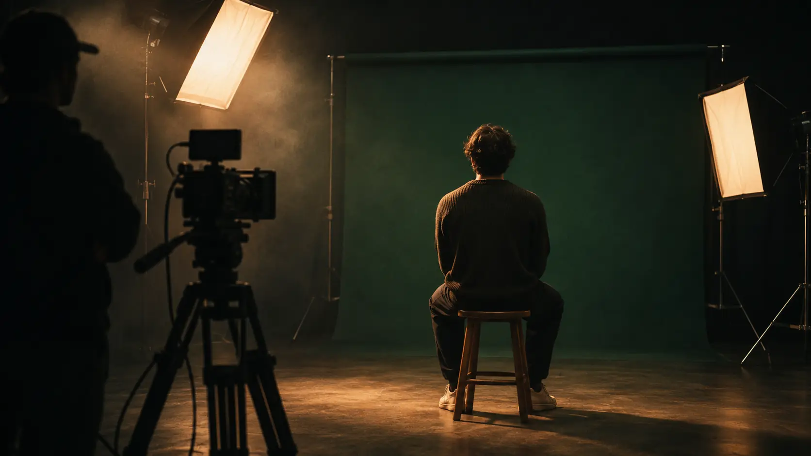

01 — MANAGEMENT
크리에이터의 성장을 함께 설계합니다.
크리에이터의 강점과 목표에 맞춰 활동 방향을 구체화하고, 안정적인 방송과 콘텐츠 활동을 위한 운영을 지원합니다. 장기적인 성장 전략을 함께 세우며 크리에이터가 자신만의 경쟁력을 만들어가도록 돕습니다.
- 크리에이터 발굴
- 활동 방향 설정
- 매니지먼트
- 방송 운영
- 성장 전략
CREATORS. CONTENT. COMMERCE.
매니지먼트, 콘텐츠 기획·제작, 마케팅, 커머스를 유기적으로 연결해 크리에이터가 자신만의 색을 키우고 더 넓은 기회를 만날 수 있도록 함께합니다
01 — MANAGEMENT
크리에이터의 강점과 목표에 맞춰 활동 방향을 구체화하고, 안정적인 방송과 콘텐츠 활동을 위한 운영을 지원합니다. 장기적인 성장 전략을 함께 세우며 크리에이터가 자신만의 경쟁력을 만들어가도록 돕습니다.
02 — MARKETING
채널과 팬덤의 특성에 맞는 브랜딩과 마케팅을 기획합니다. 광고·협찬과 브랜드 캠페인을 크리에이터의 콘텐츠에 자연스럽게 연결해, 크리에이터와 브랜드 모두에게 의미 있는 접점을 만듭니다.
03 — COMMERCE
크리에이터의 관심사와 팬덤에 맞는 브랜드와 상품을 연결하고, 라이브 커머스와 상품 기획을 통해 콘텐츠가 새로운 경험과 수익 기회로 이어지도록 지원합니다.
04 — MEDIA CONTENT
기획 단계부터 콘텐츠의 주제와 포맷을 함께 고민하고, 제작과 운영까지 이어갑니다. 숏폼부터 라이브 콘텐츠까지 채널과 시청자에 맞는 콘텐츠를 꾸준히 만들어 크리에이터의 이야기를 확장합니다.

DISCOVER
크리에이터의 개성과 강점을 살펴보고, 활동 목표와 앞으로의 방향을 함께 정합니다.
BUILD
채널의 정체성을 세우고, 크리에이터에게 맞는 브랜딩과 콘텐츠 방향을 설계합니다.
CREATE
콘텐츠 기획부터 포맷 개발과 제작·운영까지, 크리에이터의 색이 담긴 콘텐츠를 만들어갑니다.
GROW
마케팅과 브랜드 협업, 커머스를 연결해 크리에이터의 영향력과 활동 기회를 넓혀갑니다.
WE MAKE NEXT.
ASTRA AWAITS YOU DM US